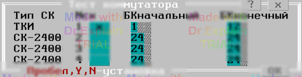

2.5 Тест самоконтроля "Коммутатор"
Тест проверяет на обрыв и короткое замыкание (КЗ) верхних и
нижних ключей к шинам A1 и B1 коммутатора. Подробности смотри
протокол выполнения.
Если тест коммутатора вызван автономно, то предоставляется меню,
показанное на рисунке ниже, позволяющее конкретизировать объем проверяемых БК.
Надо установить опцию "Nск", если в соответствующей СК имеются
проверяемые БК, а затем указать начальный и конечный номера БК
диапазона проверяемых БК. Для проверки единственного БК эти
номера должны совпадать.
